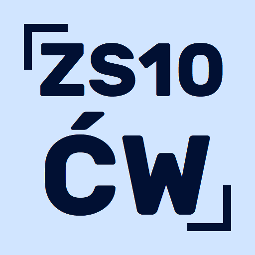
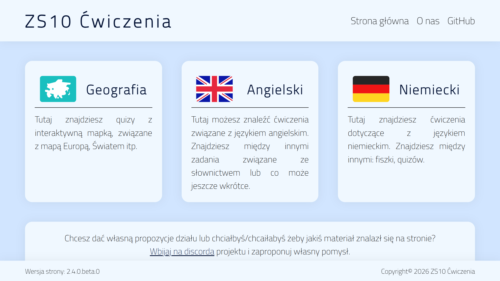
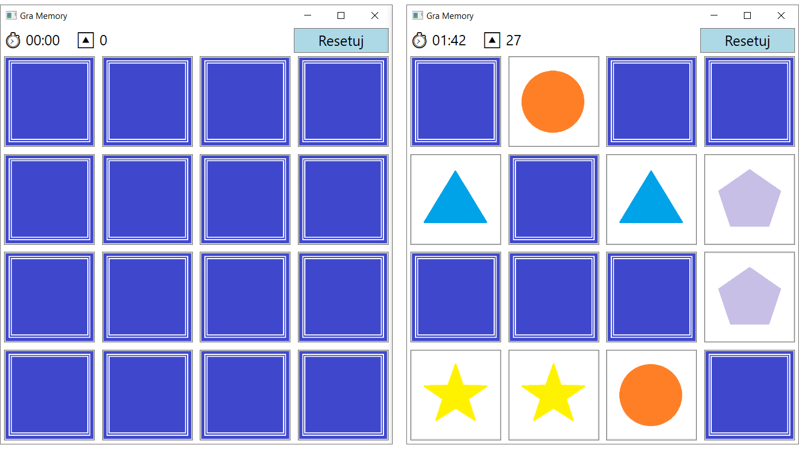

Projects
ZS10 Ćwiczenia
Strona z ćwiczeniami do powtarzania materiału ze szkoły


Utworzono
luty 2023
Ostatnia aktualizacja
czerwiec 2024
Współtwórcy
- Cyprian Moj
- Paweł Wasilewski
Języki programowania i technologie
ZS10 Ćwiczenia to strona z ćwiczeniami edukacyjnymi stworzona dla uczniów ZS10 w Zabrzu i nie tylko, które pomagają w przygotowaniu się do testów z różnych przedmiotów szkolnych. Posiada 3 rodzaje ćwiczeń:
- tłumaczenie wyrażeń na język obcy
- odmienianie czasowników nieregularnych w językach obcych
- szukanie podanego miejsca i klikanie jego na mapie
Gra memory
Prosta gra typu memory w WPF

Utworzono
kwiecień 2025
Ostatnia aktualizacja
czerwiec 2025
Języki programowania i technologie
Ten projekt to prosta gra memory (odsłanianie i szukanie par kart) napisana w WPF przy użyciu C# i XAML jako projekt szkolny podczas nauki tworzenia aplikacji desktopowych w WPF. Interfejs gry ma 16 kart (ułożone w siatce 4x4), licznik czasu, licznik odsłoniętych kart i przycisk reset.